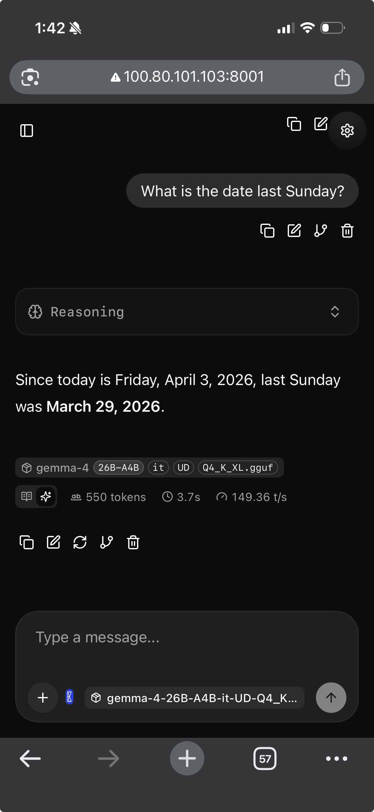

Self-Hosted Gemma 4 Chat with Web UI
These are the steps to set up a self-hosted Gemma 4 chat with a web UI that you can use from your phone and laptop, keeping all your data and models private. It is just llama.cpp’s built-in web UI served over Tailscale.
This post is based on my gist which I keep as context for future reference.
The setup gives you:
- A chat interface accessible from any device on your Tailscale network
- Web search via MCP so the model can look things up (important since models have a knowledge cutoff)
- Streaming responses, conversation history and the same UI everywhere
Here it is running on my iPhone:
My Setup
- RTX 4090 GPU server running Ubuntu with CUDA installed
- Tailscale set up on the server and all my devices (phone, laptop)
- gemma-4-26B-A4B-it-UD-Q4_K_XL.gguf from the Unsloth HuggingFace repo. If you also want vision/image support, use
mmproj-BF16.gguffrom the same repo. - The Q4_K_XL quant fits on a 4090 even with full 256K context at approximately 20.5 GB VRAM
1. Build llama.cpp
sudo apt-get update
sudo apt-get install pciutils build-essential cmake curl libcurl4-openssl-dev libssl-dev -y
git clone https://github.com/ggml-org/llama.cpp
cd llama.cpp
cmake . -B build \
-DBUILD_SHARED_LIBS=OFF \
-DGGML_CUDA=ON \
-DLLAMA_CURL=ON
cmake --build build --config Release -j$(nproc) --clean-first \
--target llama-serverVerify OpenSSL is linked:
ldd build/bin/llama-server | grep -i ssl
# Should show: libssl.so.3 => /lib/x86_64-linux-gnu/libssl.so.3Note: OpenSSL is needed because the MCP proxy makes HTTPS calls to external servers (like Exa for web search). Without it, you’ll get a 500 error about
CPPHTTPLIB_OPENSSL_SUPPORTnot being defined.
2. Create the MCP Config
Before launching the server, create a config file that sets up web search and a system prompt with today’s date.
The systemMessage is important. I found that without it, the model usually won’t initiate a web search on its own when you ask for current information or facts. It just responds with its training data. The system prompt with today’s date nudges it to actually use the search tools.
Create ~/MODELS/templates/llamacpp-webui-chat-template.json:
{
"systemMessage": "You are a helpful assistant. Today's date is {{DATE}}. When the user asks for current or recent information, use the available search tools to find up-to-date answers rather than relying on your training data.",
"mcpServers": [
{
"url": "https://mcp.exa.ai/mcp?exaApiKey={{EXA_API_KEY}}",
"name": "exa",
"useProxy": true,
"enabled": true
}
]
}I use Exa because they give you 1,000 free searches per month (no credit card required). You can get your API key at dashboard.exa.ai. Other web search MCP options:
3. Create the Launch Script
I use a wrapper script that injects today’s date and the API key into the config, then starts the server. This way the date stays fresh on every restart.
#!/bin/bash
# export EXA_API_KEY="" or source from bashrc/zshrc
TEMPLATE_FILE=~/MODELS/templates/llamacpp-webui-chat-template.json
CONFIG_FILE=~/MODELS/templates/temp-$(basename $TEMPLATE_FILE)
HOSTNAME="<YOUR_TAILSCALE_IP>"
PORT=8001
CONTEXT_SIZE=65536
sed -e "s/{{DATE}}/$(date +%Y-%m-%d)/" \
-e "s/{{EXA_API_KEY}}/$EXA_API_KEY/" \
"$TEMPLATE_FILE" > "$CONFIG_FILE"
# start the server
MODEL_PATH=~/MODELS/unsloth/gemma-4-26B-A4B-it-GGUF/gemma-4-26B-A4B-it-UD-Q4_K_XL.gguf
MMPROJ_PATH=~/MODELS/unsloth/gemma-4-26B-A4B-it-GGUF/mmproj-BF16.gguf
./llama.cpp/build/bin/llama-server \
--model $MODEL_PATH \
--mmproj $MMPROJ_PATH \
--jinja \
--host $HOSTNAME \
--port $PORT \
--ctx-size $CONTEXT_SIZE \
--parallel 1 \
-ngl 999 \
--batch-size 2048 \
--ubatch-size 512 \
--temp 1.0 \
--top-p 0.95 \
--top-k 64 \
--cache-type-k q8_0 --cache-type-v q8_0 \
--flash-attn on \
--context-shift \
--metrics \
--webui-mcp-proxy \
--webui-config-file "$CONFIG_FILE"This assumes Tailscale is already set up on your system. Replace <YOUR_TAILSCALE_IP> with your server’s Tailscale IP (find it with tailscale ip -4).
What the key flags do:
| Flag | Why |
|---|---|
--jinja |
Required for tool-call formatting via the model’s chat template |
--webui-mcp-proxy |
Enables the CORS proxy so the web UI can reach external MCP servers |
--webui-config-file |
Bakes MCP config server-side so it persists across restarts |
-ngl 999 |
Offloads all layers to GPU |
--ctx-size 65536 |
64K context window. You can go up to 256K on a 4090 but 64K is plenty for chat |
--temp 1.0 --top-p 0.95 --top-k 64 |
Google’s recommended sampling defaults for Gemma 4 |
Start the server:
bash ~/start-server.shNote: The full 256K context size works on a 4090 with Q4_K_XL, but I don’t think it’s needed for chat. I usually run with 64K or 128K.
4. Connect from Your Devices
Open a browser on your phone or laptop and go to:
http://<YOUR_TAILSCALE_IP>:8001
5. Verify Web Search Is Working
The MCP config should be loaded automatically, but it’s worth verifying:
- Open the web UI and go to MCP server settings
- You should see the Exa entry already configured and enabled
- Send a message like “What happened in tech news today?”
- The model should trigger a search tool call and cite results
To confirm tools are being sent, open browser DevTools and go to Network tab, send a message and click the completions request. Check the payload for a tools array.
Note: If the model says “I can’t search the web” or “my knowledge cutoff is January 2025”, the MCP toggle may have auto-disabled itself. Edit the MCP entry in settings and flip the toggle back ON.
6. Enable Vision (Optional)
The launch script in Section 3 already includes the --mmproj flag, so vision is enabled by default. If you don’t need it, remove the --mmproj $MMPROJ_PATH line from the script.
The web UI will automatically show an image upload button when vision is enabled.
Note: The BF16 projector is ~800MB-1GB on GPU. If VRAM is tight, add
--no-mmproj-offloadto keep it on CPU (slightly slower image processing but saves VRAM).
Troubleshooting
| Problem | Cause | Fix |
|---|---|---|
500: CPPHTTPLIB_OPENSSL_SUPPORT is not defined |
Built without OpenSSL | Rebuild with -DLLAMA_CURL=ON and libssl-dev installed |
| Model says “I can’t search” or “my knowledge cutoff is…” | MCP toggle auto-disabled or system prompt missing | Re-enable MCP toggle in settings, check systemMessage in config |
No tools array in request payload |
MCP server not connected | Check Connection Log, enable “Use llama-server proxy” via edit icon |
| MCP toggle keeps turning itself off | Connection fails on startup | Use --webui-config-file (Section 3) instead of manual UI config |
| Model ignores tools even though they’re in payload | Chat template not applied | Make sure --jinja flag is set |
Failed to fetch in Connection Log |
CORS blocking direct request | Enable “Use llama-server proxy” on the MCP entry |
| Can’t reach UI from phone | Wrong bind address | Make sure --host is your Tailscale IP, not 127.0.0.1 or 0.0.0.0 |